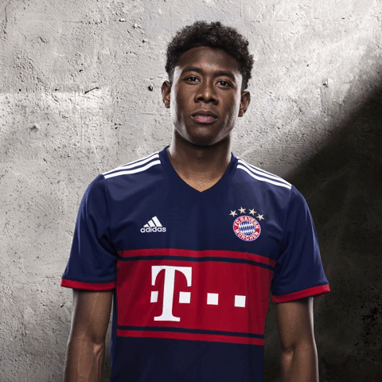

Alaba is weer terug op het veld
Bayern München kan tijdens de krachtmeting met Paris Saint-Germain in de Champions League mogelijk weer beschikken over David Alaba. De Oostenrijkse verdediger sloot zaterdag op het trainingsveld aan bij de selectie van trainer Carlo Ancelotti. Alaba had begin deze maand bij de nationale ploeg een enkelblessure opgelopen.
Bij afwezigheid van de Oostenrijker en de eveneens geblesseerde Juan Bernat moest Ancelotti in de laatste wedstrijden rechtsback Rafinha aan de linkerkant posteren. Met de Braziliaan in de ploeg verloor Bayern München in de Bundesliga bij TSG Hoffenheim (2-0) en liet het vrijdag ook punten liggen tegen VfL Wolfsburg (2-2).
De Duitse kampioen gaat woensdag in Parijs de strijd aan met PSG. Bij de Franse topclub zijn er twijfels over Neymar, Ángel Di Maria en Javier Pastore. Al deze Zuid-Amerikaanse aanvallers ontbraken zaterdag vanwege fysieke problemen tegen Montpellier.